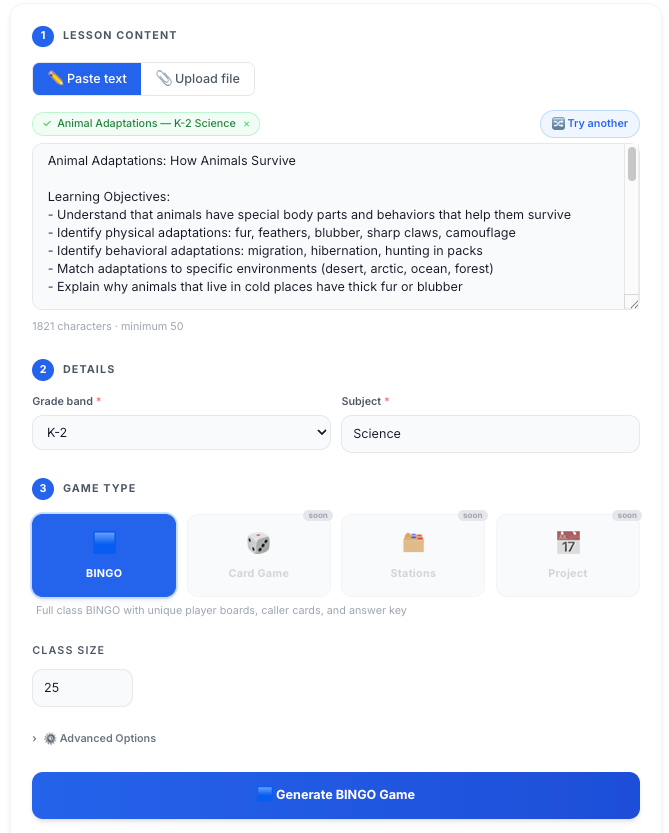
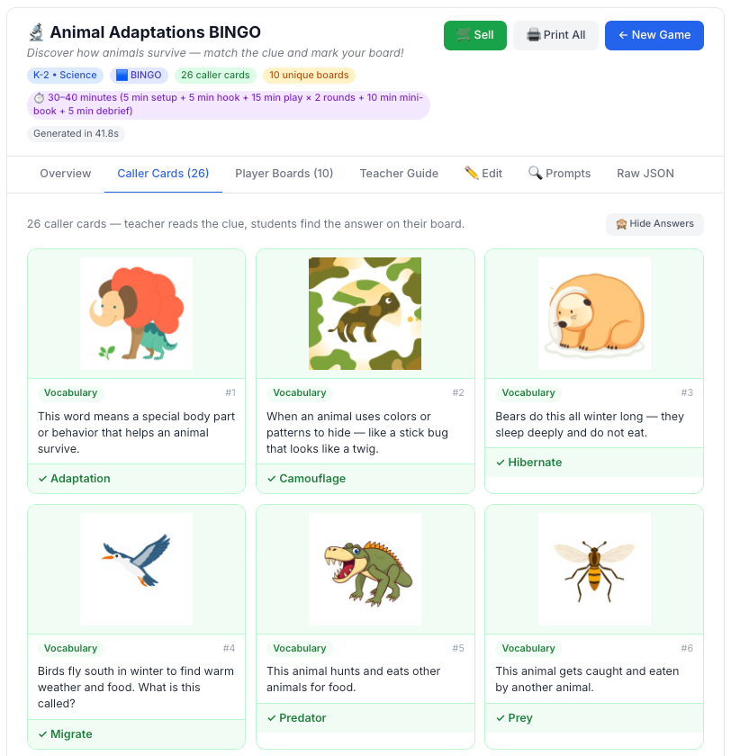
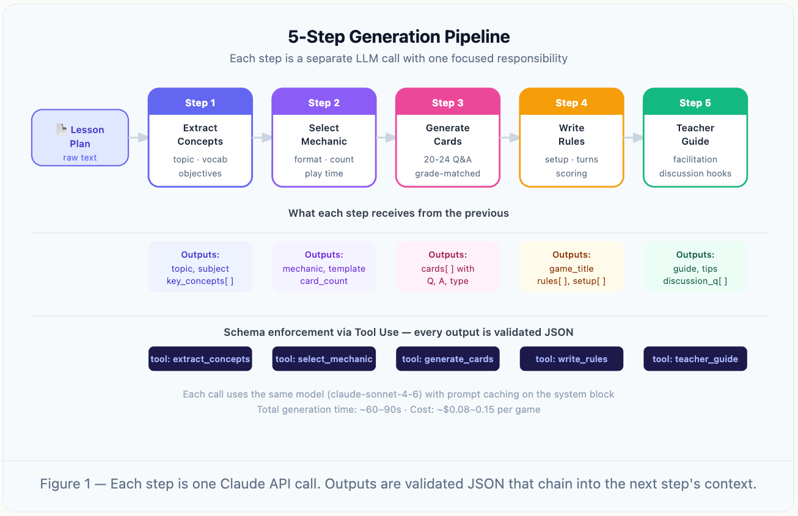
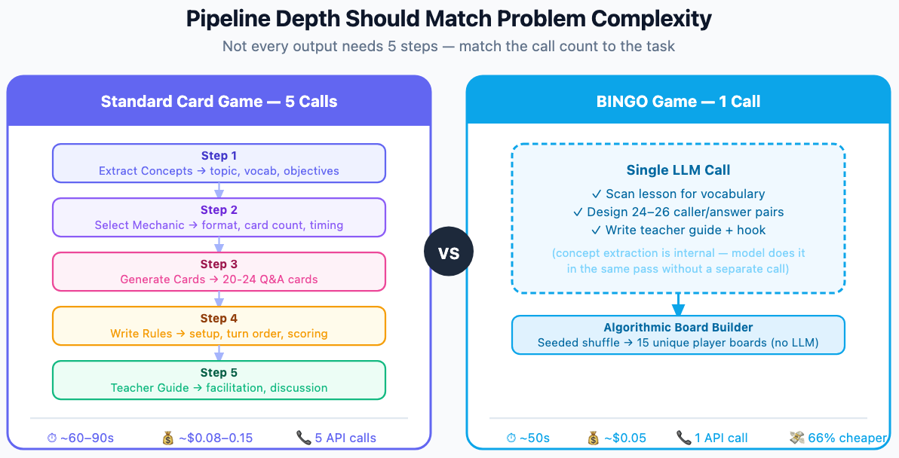
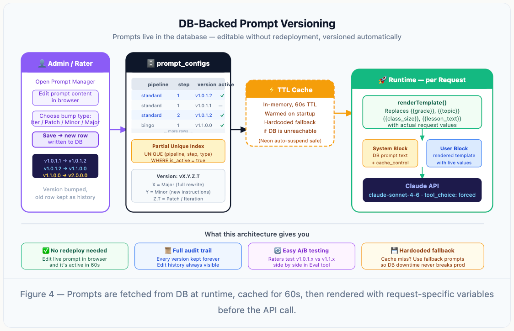
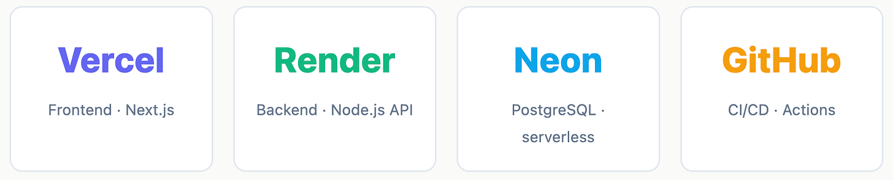
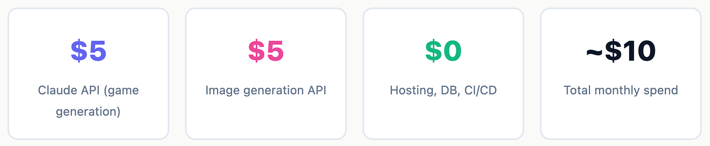

A deep dive into chaining LLM calls, keeping costs in check, shipping to production with CI/CD, and building a human evaluation loop to actually know if the output is good.
I've been building a platform that generates K–12 educational board games. A teacher uploads a lesson plan, chooses a game format, and within about a minute they get a fully playable card game — complete with game cards, rules, and a teacher facilitation guide.
The interesting part isn't the idea. It's the engineering underneath it. This case study walks through how the AI pipeline is designed: why I split it into 5 sequential LLM calls, how I get reliable structured output every time, and a few practical tricks that cut both cost and latency.
What this case study covers: sequential LLM chains · JSON schema enforcement via tool use · prompt caching · DB-backed prompts with versioning · single-call optimization for simpler games · production hosting · a human evaluation loop.


The problem with one big prompt
My first instinct was to write one massive system prompt: "You are a game designer. Given this lesson plan, produce a complete board game in JSON." It sort of worked. But the output was inconsistent — sometimes the card count was off, sometimes the rules didn't match the game format, and the teacher guide was generic.
The core issue: I was asking the model to do too many unrelated things at once. Concept extraction, format selection, card generation, rules writing, and teacher guidance all require different thinking modes. Collapsing them into one prompt means each task competes for attention and the model has to make implicit decisions that should be explicit.
The fix: break it into five focused steps, where each step is its own LLM call with a single responsibility, and each step's output feeds the next as structured input.
The pipeline
The key insight: each step is only responsible for one decision. Step 1 extracts learning objectives without worrying about game mechanics. Step 2 selects the right game format without worrying about card content. Because each step has a narrow job, it does that job more reliably.
Lesson plan → playable game
Parse the uploaded lesson plan into structured concepts, grade level, and target vocabulary. No game reasoning yet.
Given the objectives, pick the format that best fits the concept density and interaction style. Format decision isolated from content.
Produce the deck — question/answer pairs, prompts, or vocabulary — scoped to the chosen mechanic. Structured JSON via tool use.
Turn the mechanic into clear, student-facing rules that match the actual generated cards, not a generic template. Reads Steps 2 & 3 as input.
Produce a practical guide for running the game — setup, timing, discussion prompts, differentiation notes. Reads the full context.

Cost & latency
When you run 5 LLM calls per game, cost and latency are real concerns — especially in an MVP where every dollar counts. I chased optimizations that seemed obvious but didn't move the needle much, and some I initially overlooked made a big difference.
The most impactful cost reduction wasn't any API configuration — it was architecture. For game formats with a simpler creative structure, I don't run the full 5-step pipeline. The BINGO generator does everything in a single LLM call and generates player boards algorithmically. That alone cuts cost by roughly two-thirds compared to the standard pipeline.
Long, sprawling system prompts increase cost on every call and, ironically, often produce worse output. Each step's prompt is scoped to exactly what that step needs to know. Step 1 doesn't need to know about teacher-guide formatting. Step 5 doesn't need mechanic-selection logic. Tight prompts reduce input tokens and help the model stay on task.
Asking the model to return JSON via tool use — rather than free-form text that I then parse — cuts output tokens significantly. No prose preambles, no explanations, no markdown fences. Exactly the schema, nothing more. Across 5 steps, this adds up.
Some downstream steps have no data dependencies on each other. Running them in parallel cuts wall-clock time substantially even when total token cost stays the same. End-to-end generation time is what the teacher experiences — parallelism is the fastest path to improving that perception.
Model version swaps. The quality difference between model tiers on these tasks is significant enough that downgrading to save tokens often just means more prompt iteration cycles to fix regressions — which costs more in total.
Right-sizing the depth
After shipping the standard pipeline, I added a BINGO game format. BINGO has a fundamentally simpler structure — 24–26 vocabulary caller/answer pairs and a set of player boards. There's no real mechanic selection, no multi-card Q&A sequence to orchestrate. It's one decision: pick the right words.
Running it through the full 5-step pipeline felt like overkill, so I built a single-call variant: one LLM call generates the pairs and teacher guide, then a deterministic algorithm builds the player boards using a seeded shuffle. No second LLM call needed.

Don't default to a fixed number of steps. The right depth is determined by how many genuinely independent decisions the task requires. — the pipeline design rule
Prompt operations
Early on, every prompt tweak required a code push. A teacher would give feedback like "the vocabulary was too hard for second graders" and I'd update a string in a .js file, commit, redeploy, wait. The feedback cycle was slow and annoying.
I moved all prompts into a PostgreSQL table called prompt_configs. Each row stores the prompt text, which pipeline and step it belongs to, a version code, and an is_active flag. At runtime, the app fetches the active prompt from the database (with a 60-second in-memory cache), renders any template variables, then sends it to the API.

prompt_configs schema — versioned prompts, one active row per pipeline+step, all history preserved.The versioning scheme is vX.Y.Z.T:
Tiny tweak, same intent. Reset when Z increments.
Quality fix. Resets T.
New instructions or behavior. Resets Z + T.
Full rewrite with different goals. Resets everything.
A partial unique index enforces that only one row can be active per pipeline+step combination at any time — while keeping all history intact for rollback or comparison.
I edit prompts directly in a browser-based Prompt Manager. The change takes effect within 60 seconds — no git commit, no deploy, no downtime. And every previous version is permanently stored if I need to roll back.
Shipping to production
An AI pipeline that only runs locally isn't a product. Getting this to production required making decisions about where each piece lives and how changes flow from my laptop to users.

Push to main, GitHub Actions runs type checks and builds, then Vercel and Render pick up the new code automatically via their GitHub integrations. No manual deploy steps.
The more important discipline is feature branches and PR reviews before merging to main. Because this is an AI product, a bad prompt change or a schema mismatch can silently produce garbage output — no crash, no 500 error, just a game that doesn't make sense. A review step before code lands in production catches those before real users see them.
Environment variable management across three platforms (Vercel, Render, local dev). Keeping ANTHROPIC_API_KEY, database URLs, and auth secrets in sync takes more deliberate attention than it looks. I now keep a .env.example file checked in and treat it as the canonical list of required variables.
Real economics
People hear "AI product" and assume the infrastructure bill is significant. The reality for an early-stage product is very different.

The MVP economics: $10/month in AI API costs is the entire variable spend. Everything else is fixed at zero. This means I can run and iterate on the product for months before revenue becomes a survival question — which is exactly the space an MVP needs to operate in.
Knowing it's actually good
This is the question I underinvested in early on. I was focused on getting the pipeline to produce valid output — correct JSON, right card counts, no crashes. But valid output and good output are very different things. A game can pass every structural check and still be educationally useless.
The only way to know if the pipeline is producing quality is to have humans evaluate it against a defined standard.
Do the cards actually reflect the key concepts from the lesson plan? Would a teacher recognize their own content?
Is the vocabulary, question complexity, and assumed prior knowledge right for the target grade level?
Are the rules clear? Could students actually play this without the teacher explaining everything?
Does the facilitation guide give a teacher something useful, or is it generic filler?
Every generated game records which prompt version and which AI model version produced it. When raters evaluate a game, that score is attached to the specific configuration that generated it — not just "the pipeline" as a black box.
This means I can ask: did switching from prompt v1.0.1.1 to v1.1.0.0 on Step 3 actually improve card quality? The answer comes from aggregated rater scores, not from eyeballing a few examples. Prompt regressions are visible — if a change scores consistently lower than the previous version, I know to roll back.
Generate a batch of games → raters score them in the Eval tool → scores aggregate by prompt version → identify which step or version is pulling the average down → update the prompt in Prompt Manager → repeat. The feedback cycle from "rater flags an issue" to "new prompt live" is under a few minutes.
It's tempting to trust that a more capable model version automatically means better output. In practice, model updates can shift behavior in ways that hurt domain-specific tasks even while improving general benchmarks. Human evaluation anchored to your rubric is the only signal you can actually trust for your specific product.
Lessons
Collapsing unrelated tasks into one giant prompt looks efficient but produces average output at everything. Split by the number of genuinely independent decisions.
A 5-step chain isn't a template. BINGO ships with 1 LLM call and a deterministic board builder because it only has one creative decision to make. Match the pipeline shape to the actual complexity.
Prompts change more than code does. Storing them in a database with versioning and an active flag decouples iteration speed from deploy speed — and gives you rollback for free.
Passing schema checks proves your parser works, not that a teacher would use the game. A human rubric is the only signal that tracks the thing you actually care about.
At early-stage volumes, the variable AI cost dominates and everything else is free. That's a long runway to iterate on quality before pricing conversations become urgent.